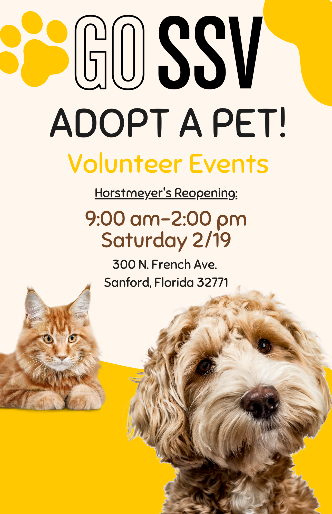
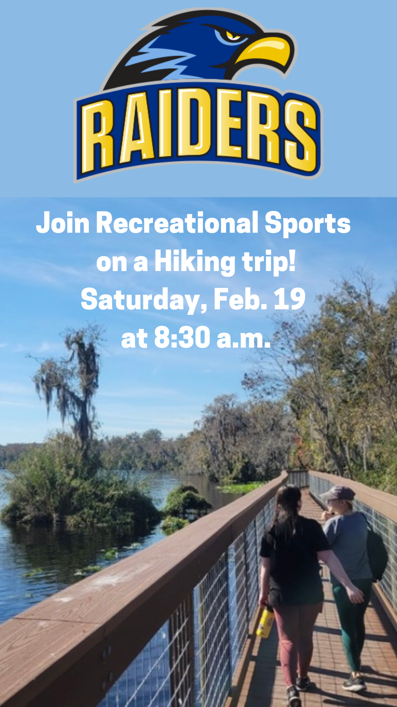
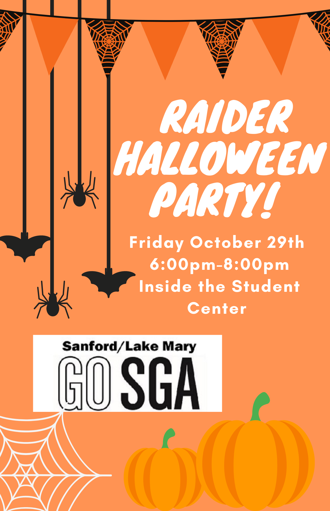
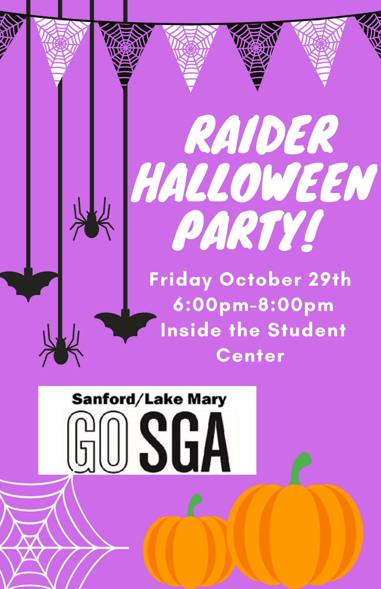
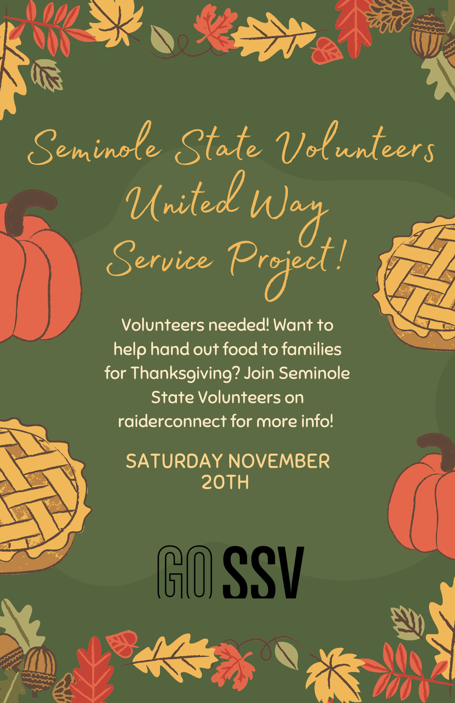

Diana La Torre
Contact Information:
Email: dianalatorre14@gmail.com
Cell Number: (386)-315-1776
Academic Goal
Seeking opportunities in higher education as it relates to college admissions, scholarships and internships that support career aspirations in the field of Advertising and Public Relations.
Education
Seminole State College of Florida, Sanford, FL (08/2020 - 04/2022): Associate in Arts Degree – General Education Program, Certificate - Social Media Development, 3.59 GPA on 4.0 Scale
Oviedo High School, Oviedo, FL (08/2016- 06/2020), Earned High School Diploma, 3.25 GPA on 4.0 Scale
Achievements
Inducted into Phi Theta Kappa International Honors Society in 2020.
Inducted into the Grindle Honors Institute in 2020.
Inducted into the Student Government Association in 2020.
Acknowledged on the Dean’s List in 2020.
Acknowledged on the Dean’s List in 2021.
Acknowledged on the President’s List in 2021.
Awards
Earned a Johnson Scholarship Foundation Direct Connect Scholarship in 2020.
Earned a Honors Institute Scholarship in 2020.
Earned a Tracy Lynne Rupp Memorial Endowed Scholarship in 2021.
Earned a University Club of Orlando Endowed Scholarship in 2021.
Earned a Robert J. Schmidt & E.S. Douglas First Generation Scholarship in 2021.
Earned a Helios Foundation Scholarship in 2021.
Earned a Seminole State Volunteers Scholarship in 2021.
Related Experience
Social Media Assistant | Marketing Department, Seminole State College of Florida
Learned to use Hootsuite to upload and create social media posts across all social media platforms for Seminole State College.
Attended events for the College to gain pictures and stories for social media.
Invited to weekly PR meetings to discuss several updates in earned/editorial media coverage, current initiatives, hot topics, paid media/advertising, student communications, and events/owned social media.
Created a YouTube series called Rally’s Alley that promotes several aspects of the College.
Skills and Abilities
Customer Service: Experienced at delivering excellent customer service by providing recommendations regarding products/services, assisting with purchases and ensuring satisfaction.
Technology: Proficient in using the entire MS Office Suite including Word, Excel, and PowerPoint. As well as efficient in marketing tools such as Adobe Photoshop, Canva, Hootsuite, Atom, and iMovie.
Reporting: Able to use Microsoft word to create agendas for various meetings and presentations.
Research: Familiar in using the Internet to perform personal, academic and work-related research.
Communication: Proficient in developing and delivering presentations using PowerPoint, Canva, and Prezi, while speaking with clarity and listening with comprehension in both small and large groups.
Language: Able to communicate proficiently in English and Spanish.
Software/Hardware
Adobe Photoshop
Canva
HootSuite
HTML
Atom
iMovie
Social Media
Instagram
Github
Leadership Experience
1.) President | Student Government Association (12/2021 - 04/2022)
- Provided direct leadership to SGA Board Members for the largest campus of four campuses, including representing the College at large conferences and state organizations, encouraging professional development, and facilitating/delegating tasks.
- Coordinated weekly meetings with 10-30 active members; maintain ongoing communications related to activities, events and legislation with a membership of 233 students.
- Oversee 25 active clubs/organizations by making sure each group has its needs met, holding each group accountable for tasks and events, as well as, gathering budget requests.
- Require reports of any officer, representative, or committee of the SGA.
- Appointed chair positions.
2.) Vice President │ Student Government Association (SGA) (04/2021 – 12/2021)
- Presided over all meetings of the SGA in the absence of the president.
- Was expected to assume all powers and duties of the presidents in the event of resignation or withdrawal of the president.
- Learned about all FCCSGA legislative issues that affect community college students and voice student opinion on these issues to administrators and legislators.
- Assumed all normal and assigned duties of a Vice President.
- Presided over the Council of President meetings.
3.) Board Member │Seminole State Volunteers (09/2021 - 04/2022)
- Develop, coordinate and organize 2 service events for the semester and handout and collect all assessment forms.
- Recruit, direct, and organize volunteers to take part in all service events.
- Network with the city, county, and state service agencies to promote SSV service projects to the Seminole State College of Florida community.
- Maintain and update the online service event volunteer hours, volunteer address book, agency directory, and social media platforms.
- Attend the Council of Presidents or SGA meetings once a month on any of the 4 campuses.
4.) Leadership Cohort Member | H.O.P.E Scholars (12/2021 - 04/2022)
- Cohort members participate in bi-weekly team meetings where we discuss upcoming events, and dialogue on issues directly impacting students of color.
- The cohort creates an opportunity to cultivate community and develop a network of trust and support amongst the students.
- Meet with Career Counselor once within each semester.
- Attend a minimum of three H.O.P.E. Scholars Activities per semester.
- Attend a minimum of two Skills Sessions offered by Career Development per semester.
Work Experience
1.) Guest Advocate Team Member | Super Target, Sanford, FL. (04/2021- Present)
- Make a connection with guests by engaging in friendly and genuine conversation throughout each transaction; asking open ended questions about the guest’s shopping experience and using those questions to assess, understand, and determine how to tailor your approach.
- Welcome guests into self-checkout, guest services, check lanes, and provide assistance as needed.
- Understand and show guests how to use Wallet and the other features and offerings within the Target App.
- Attempt every return and follow register prompts, be empowered to make it right for the guest while following Targets policies and procedures.
- Deliver easy and seamless service to all Order Pick Up, Drive Up, and Registry guests.
- Demonstrate a culture of ethical conduct, safety, and compliance.
2.) Cashier | Marshalls TJX Companies, Sanford, FL. (11/2020 – 04/2021)
- Operated cash register, collected payments, and provided accurate change.
- Assisted with purchases, locating items and signing up for rewards programs, gaining new loyal customers and promoting rewards credit card.
- Learned roles of other departments to provide coverage and keep store operational.
- Observed company return policy when processing refunds, including inspecting merchandise for wear or damage.
- Wiped down counters and conveyor belt to remove debris and maintain cleanliness.
3.) Restaurant Hostess │Marriott, Lake Mary, FL (02/2019 – 03/2020)
- Stayed in open communication with servers, food runners, busters, kitchen team to assess cooking times, avoid worker overload and minimize customer dissatisfaction.
- Supervised server balance and monitored table turnover to accurately seat customers and keep customers happy.
- Maintained highly loyal clientele by delivering unparalleled service at every stage of restaurant dining experience.
- Assisted managers with quickly resolving service- and food-related issues.
- Governed dining area with natural leadership talents and organizational strategies focused on balancing guest and business needs.
Volunteer Service
Pet Rescue by Judy Donation Drive (04/2021)
Outside In Donation Drive (04/2021)
Hispanic Student Association Heritage Month Event (10/2021)
Subaru Pet Adoption (10/2021)
United Way Thanksgiving Turkey Drive (11/2021)
Pet Rescue by Judy Donation Drive (11/2021)
SERV Road Clean up (12/2021)
Toy Donation Drive (12/2021)
Committees
Part of Seminole State’s Technology Committee
Part of Seminole State’s Bookstore Committee
Part of Seminole State’s Curriculum Committee
Part of the SASF Budget Committee
Part of the Student Government Association Marketing Committee
Part of the Student Government Association Party Committee
Part of the Environmental Health, Safety, and Security Committee
Part of the Curriculum Committee
Projects




